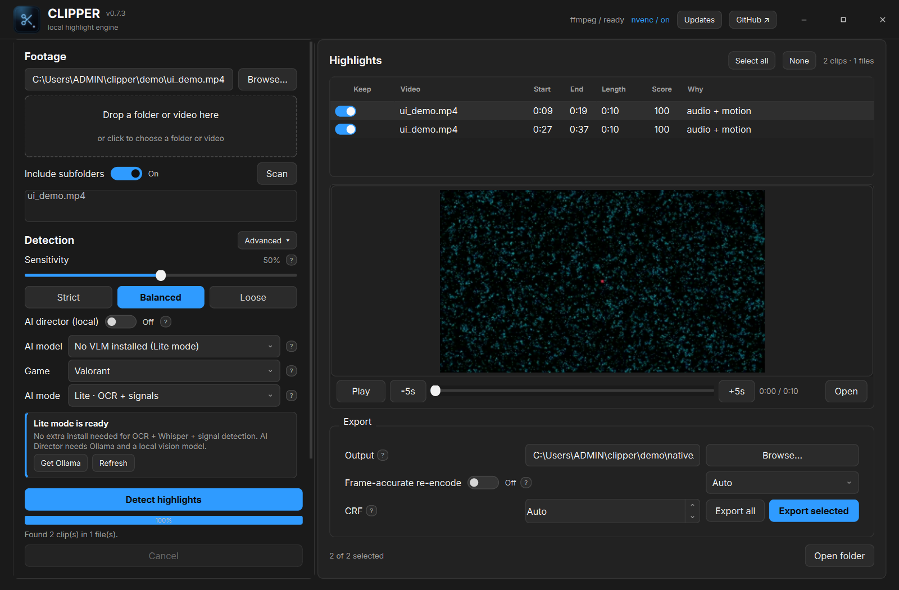

Smart padding + merging
Each detected peak gets 8 seconds before and 5 seconds after. Overlapping or near-adjacent windows merge when the gap is under a second, keeping a continuous fight as one clip instead of six fragments.
Clipper scans a folder, finds the loud reactions and sudden motion, merges nearby moments, and cuts clean clips with FFmpeg. Everything runs on your machine. No accounts, no uploads, no admin prompt.

Built for the “I have 40 GB of ShadowPlay clips and want the good 30 seconds” problem.
Each detected peak gets 8 seconds before and 5 seconds after. Overlapping or near-adjacent windows merge when the gap is under a second, keeping a continuous fight as one clip instead of six fragments.
Select a row to see its peak frame immediately. Play, pause, seek, and nudge with the inline player. A single click never starts playback; the controls are always visible.
Stream copy is instant and preserves the original stream. Turn on frame-accurate re-encode when you need exact edges, with CPU or NVENC encoding.
When a game is running, Clipper pauses analysis and unloads the local vision model so the game keeps its VRAM. It resumes when you close the game.
A real NVENC test enables GPU encoding by default. Motion scoring and audio analysis stay on the CPU, where they belong. Threads are capped so your machine stays usable.
A performance preset, not a fake “AI off” mode: 2 threads, a 256 px / 2 fps proxy, and below-normal priority. AI Director still runs if it is enabled.
The installer includes the speech and OCR models. A multi-gigabyte vision model is not bundled; Director uses Ollama so you control the download and the model.
We no longer recommend the 3B vision model; the 4B Gemma model is the tested 6 GB choice.

Drop footage in or click the drop zone. Clipper probes duration, resolution, FPS, and audio locally.
Audio spikes, motion, and optional local AI produce candidate windows. Padding and merging turn them into clean clips.
Preview in the app, keep the rows you want, and export selected or all. Stream copy for speed, re-encode for exact edges.
Windows 10/11, per-user install, no admin prompt. The installer includes FFmpeg, Whisper base.en, RapidOCR, YAMNet, and the runtime it needs.
Native Windows x64. No Python. No FFmpeg install. No admin.
Yes. Analysis, OCR, transcription, and export run on your machine. Clipper does not upload footage. The only network request is the optional GitHub update check; the app has no accounts and no telemetry.
Director does. It is optional. Lite mode is included and works with no extra install: Whisper, HUD OCR, and YAMNet ship with the app. If Director is not set up, Clipper stays in Lite mode and keeps working.
Each detected peak gets 8 seconds before and 5 seconds after. If two candidates overlap or are less than a second apart, they merge into one window and keep the stronger peak. That keeps a fight, a goal replay, or a reaction as one coherent clip instead of several fragments.
It is a performance preset: 2 CPU threads, a 256 px / 2 fps analysis proxy, and below-normal process priority. It does not disable AI. If AI Director is enabled, it still runs; turn AI off separately if you want heuristic-only detection.
Use gemma3:4b. It is the tested 6 GB choice. On 8 GB or more, qwen2.5vl:7b gives better story judgment. The old 3B recommendation is retired.
It ships with a large title map, detects Unreal Engine shipping processes, and recognizes games installed through Steam, Epic, GOG, Riot, EA, Ubisoft, and Xbox paths. If a title is missed, you can add it to %LOCALAPPDATA%\Clipper\games.json.
Yes. Clipper is MIT licensed and the Windows build is free. There is no paid clip service or cloud tier.